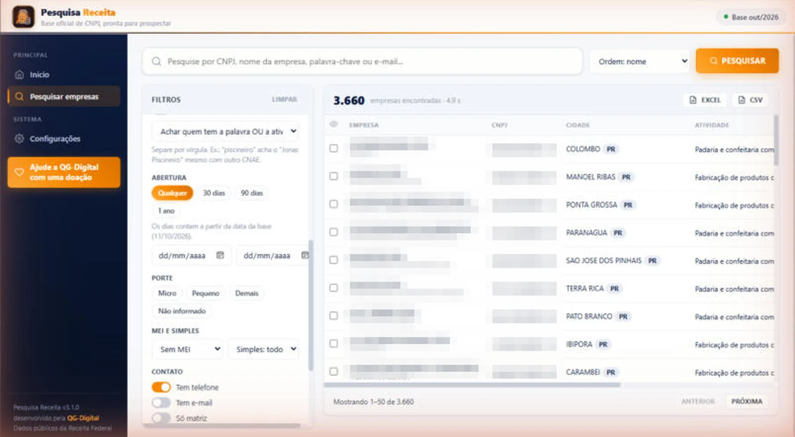

Pesquisa Receita
A base oficial de CNPJ da Receita Federal no seu computador. Com um clique ele baixa a versão mais nova e deixa você pesquisar 28 milhões de empresas ativas por nome, CNPJ, palavra-chave, atividade, cidade e data de abertura.

Da base da Receita à lista pronta, em 4 passos
A Receita Federal publica todo mês o cadastro de todas as empresas do Brasil. O Pesquisa Receita baixa, organiza e deixa tudo pesquisável no seu PC, sem depender de site nenhum.
Baixe e instale
Instalador simples, sem cadastro e sem cartão. Na primeira vez você escolhe a pasta onde a base vai ficar.
Baixe a base nova
Um clique baixa a versão mais recente da Receita (cerca de 8 GB) e monta a base. Se a internet cair, ele continua de onde parou.
Pesquise
Por CNPJ, nome, palavra-chave ou e-mail, com filtros de estado, cidade, bairro, atividade (CNAE), abertura, porte, MEI e Simples.
Exporte e prospecte
Marque o que já viu, anote, abra o WhatsApp da empresa e exporte a lista para Excel ou CSV.
Cada empresa com os dados oficiais
Tudo vem do cadastro público do CNPJ. Dá para achar, por exemplo, todo mundo que tem "piscineiro" no nome ou a atividade de limpeza de piscinas, numa cidade só.
- Razão social e nome fantasia
- CNPJ, matriz ou filial
- Telefones
- Endereço completo
- Atividade principal e secundárias
- Data de abertura e porte
- Sócios, MEI e Simples

Sem assinatura, sem API, sem limite
O Pesquisa Receita é gratuito para todo mundo e não depende de API paga: a base inteira fica no seu computador. Se ele te ajudar a fechar negócio, você pode apoiar a QG.Digital com uma doação a partir de R$ 10, por Pix ou cartão, direto no aplicativo.
- Empresas abertas nos últimos 30 dias num clique
- Pesquisa em segundos em 28 milhões de empresas
- Atualize quando quiser: a Receita publica uma versão por mês